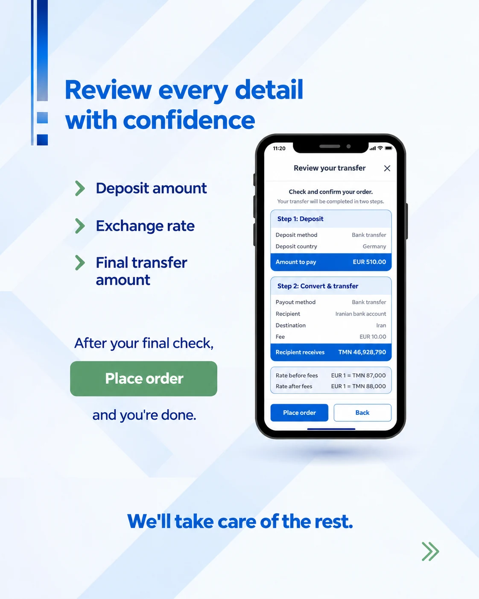
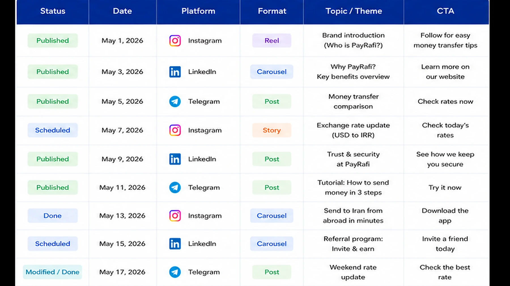

Making a financial service easier to understand, across three social channels.
Period
October 2025 – May 2026
Channels
Instagram · LinkedIn · Telegram
My role
Channel planning, content architecture, social design, publishing, community management, and performance review.
Team & boundaries
Worked within an existing Brand Book and Tone of Voice. Content strategy and pillars were collaborative; a Content Writer contributed scenarios and copy.
Selected deliverables
Channel plan, content calendar, educational carousels, product guidance, campaign assets, and a KPI framework.

English portfolio adaptations of selected Persian-language work. Original Insights are shown in the evidence section.
The brief
Trust and clarity before the next step
PayRafi serves people navigating international money transfers, including freelancers, students, and Iranians abroad. The brief was to build a consistent social presence that explained the service and addressed the questions around using it.
Communication priorities
Explain how the service and transfer process work.
Address questions about safety, fees, and rates.
Connect education, product guidance, and campaign messages.
What I was responsible for
I organized topics, formats, channel emphasis, and publishing into a connected calendar, then designed and adapted the visual content within the existing identity.
How I approached it
Three decisions that shaped the work
01
Sequence the audience’s questions
The calendar connected problem awareness, safe guidance, trust, app education, and action. This gave educational and promotional pieces a place within a broader publishing plan.
How do I transfer safely?
Can I trust the service?
What is the offer?
02
Keep the framework shared. Adapt the execution
All three channels used the same content pillars. I varied the format, publishing frequency, and emphasis for each channel. Awareness was a stronger emphasis on LinkedIn and Telegram; trust and credibility were a stronger emphasis on Instagram.
Channel
Adaptation in practice
Instagram
A visual hook, short carousel progression, and product-led guidance.
Telegram
Compact summaries and direct messages around services and campaigns.
LinkedIn
Structured explanations and comparison-led content.
Cross-platform adaptation · One topic, three executions: Instagram, Telegram, and LinkedIn.
03
Make the strategy executable
I connected channel, format, topic, timing, and CTA in the content calendar. A shared structure supported cross-platform planning while leaving room for the different roles of each channel.

Content calendar · English portfolio adaptation
Selected deliverables
A closer look at the work
Explore the work by format, from a complete product carousel to campaign and editorial visuals. English portfolio adaptations are shown where available.
01 / Carousel · 6 slides
Product walkthrough
A guided introduction to Quick Transfer, from setup and fee review to payment and tracking.
01 / Quick TransferIntroduce the feature02 / Get startedChoose currencies and transfer details03 / Before you payReview rates, fees, and amounts04 / Review your transferCheck the order before confirming05 / Send your paymentAdd the receipt06 / Track the transferFollow progress and completion
Scroll through the sequence or select a slide to enlarge
02 / Vertical format · 6 covers
Reels covers
Service introductions, audience questions, trust-building content, and a referral campaign.
Introducing PayRafiCurrencies in your pocketAn audience problemAlways by your sideReferral campaignSigns of a trusted service
03 / Wide format · 5 visuals
Landscape assets
A Telegram campaign banner and supporting blog imagery, using a shared financial-service visual language.
Transfer confirmationBlog imageTime and financial decisionsBlog imageTransfer timelinesBlog imageDigital money transfersBlog image
04 / Education & campaigns
Social posts
Individual pieces addressing service questions, account security, and campaign offers.
Transfer guidanceEducational checklistAccount securityTrust-building contentReferral offerCampaign communicationService communicationProduct and benefit framing
Evidence & learning
Two independent content snapshots
These examples answer different questions: discovery beyond existing followers, and actions recorded after viewing a service explainer. They are separate Reels, with separate Insights.
Example A / Collaboration Reel
Discovery beyond the existing audience
A Reel published with a partner page on 24 December 2025.
10,719Total views in overview Instagram + Facebook
91.5%Views from non-followers in the saved Views breakdown
Overview and Views screenshots from the collaboration example.
Example B / Service explainer
Views and downstream profile actions
A separate Reel explaining the money transfer service.
1,069Views
124Shares
41Profile visits
17Follows
Overview and Engagement screenshots from the service explainer.
These are selected content-level examples, with different content and distribution contexts. They do not establish a project-wide growth rate, a conversion lift, or the effect of design alone.
How I used measurement
I designed a framework across distribution, engagement, and intent, with platform-specific measures. Performance review informed questions about video length and how to support deeper audience engagement.
What remained to test
Shorter explainers and stronger bridges from discovery to consideration were next directions. The project ended before these hypotheses could be fully re-measured.
Scope and collaboration details
Owned: channel planning, content calendar, journey structure, visual design, cross-platform execution, KPI framework, performance analysis, and community management.
Collaborative: overall content strategy, content pillars, scenarios, and copy/captions.
Executed: visual and publishing work for the referral campaign.
Existing inputs: core brand identity, Brand Book, and Tone of Voice.
04 / Education & campaigns
Social posts
Individual pieces addressing service questions, account security, and campaign offers.